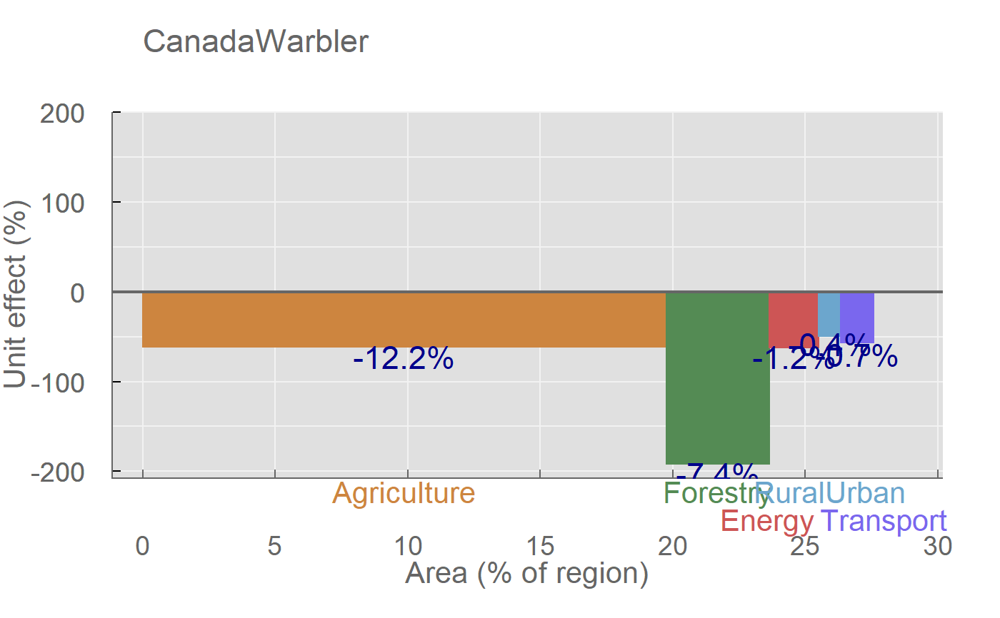
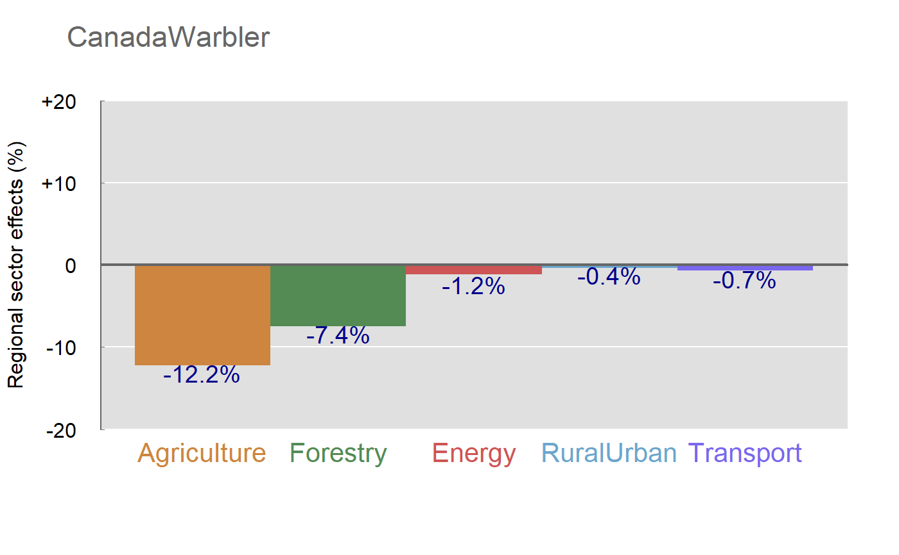
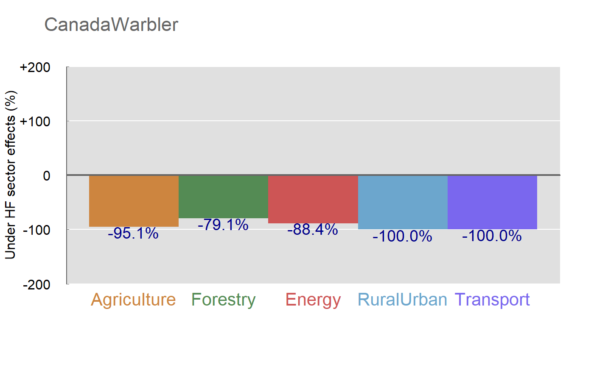
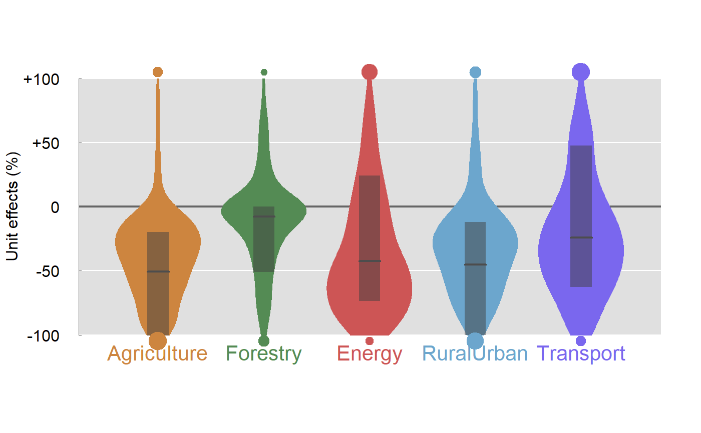
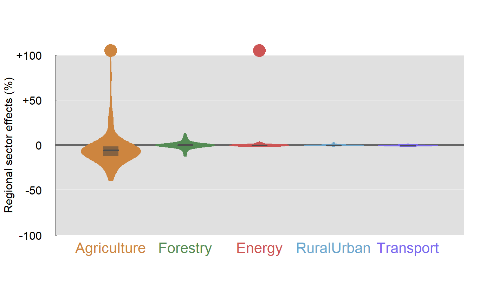
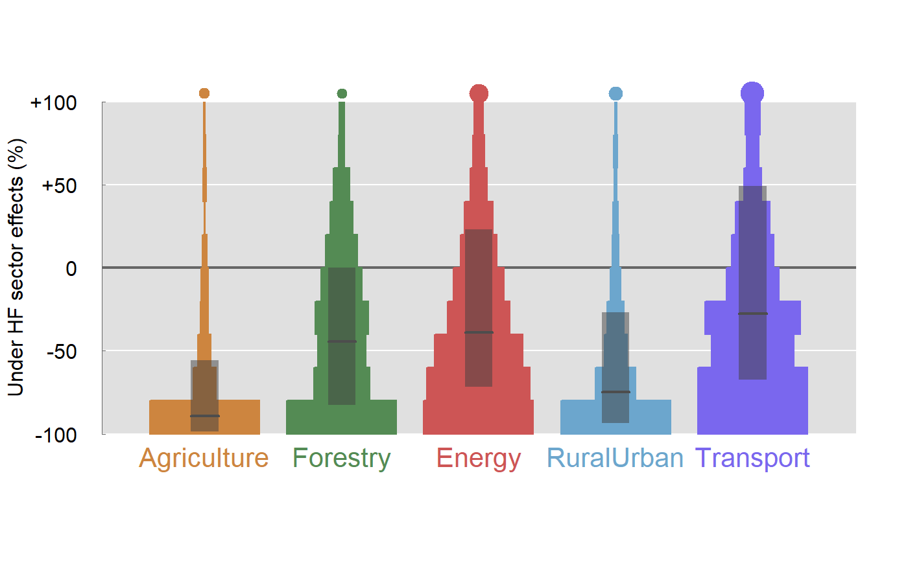
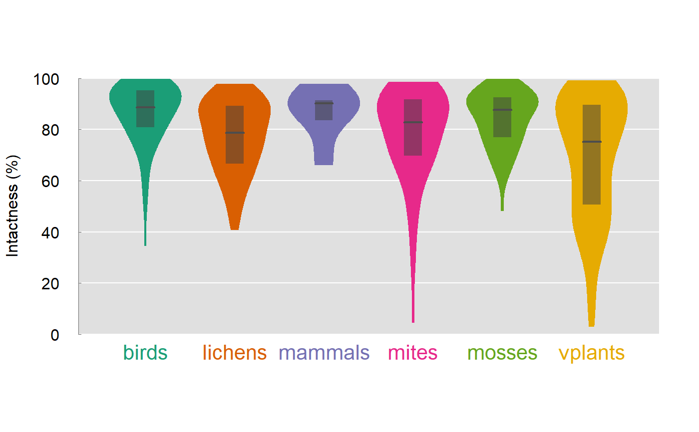
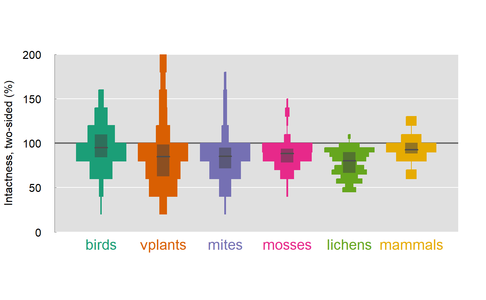

plots.RdPlots the sector effects for a single or a group of species.
plot_sector(x, ...) # S3 method for c4iraw plot_sector(x, type=c("unit", "regional", "underhf"), main, ylab, subset=NULL, ...) # S3 method for c4idf plot_sector(x, type=c("unit", "regional", "underhf"), main, ylab, subset=NULL, ...) plot_intactness(x, ...) # S3 method for c4idf plot_intactness(x, type=c("SI", "SI2"), col, ...) plot_abundance(species, type, plot=TRUE, paspen=0, ...)
| x | an object of class 'c4iraw' (from |
|---|---|
| species | character, species ID (see |
| type | type of the plot, see Details. |
| main | title for the plot, if single species results are displayed the default is to use the species ID. |
| ylab | character, optional label for the y axis. |
| subset | subset of sectors to be plotted, can be any suitable index. |
| plot | logical, if a plot is to be drawn. |
| paspen | numeric in [0, 1], the probability of aspen occurrence (proxy for climatic suitability for treed vegetation). |
| col | color. |
| ... | other possible arguments passed to underlying functions,
e.g. |
"unit" type sector effects are based on regional current and reference abundances,
and the regional sector effects are standardized by footprint area.
"regional" sector effects includes native and disturbed habitats when
comparing regional abundance under current and reference conditions.
"underhf" (under human footprint) type sector effects consider only the abundance
that us 'under the footprint', meaning that the current designation
is disturbed.
The single species sector effect plots are different kinds of bar plots. The multi-species plot represents violin (carrot, vase) plots based on kernel density, fast Fourier transform, or binning (histogram).
Intactness plots are either one sided (0-100%, "SI"),
or two-sided (0-200%, "SI2") differentiating increased (>100%)
and decreaser (<100%) species.
Abundance plots depend on the type argument:
"veg_coef" type abundance plots show relative abundances across
various land cover (incl. disturbance) classes,
"soil_coef" shows relative abundance by soil and disturbance types.
The "veg_lin" and "soil_lin" types show average relative abundances
compared to 10% vegetated (soft) and non-vegetated (hard) linear disturbance.
Called for the side effect of drawing a plot. Returns the plotted data invisibly.
## *res*ults from calculate_results, all province, all species fn <- paste0("http://sc-dev.abmi.ca/reports/", getOption("cure4insect")$version, "/misc/raw_all.rda") con <- url(fn) load(con) close(con) plot_sector(res[["CanadaWarbler"]], "unit")plot_sector(res[["CanadaWarbler"]], "regional")plot_sector(res[["CanadaWarbler"]], "underhf")z <- do.call(rbind, lapply(res, flatten)) class(z) <- c("c4idf", class(z)) plot_sector(z, "unit") # all speciesplot_sector(z[1:100,], "regional") # use a subsetplot_sector(z, "underhf", method="hist") # binned versionplot_intactness(z, "SI")plot_intactness(z, "SI2", method="hist")if (FALSE) { ## land cover associations load_common_data() plot_abundance("Achillea.millefolium", "veg_coef") plot_abundance("Achillea.millefolium", "soil_coef") plot_abundance("Achillea.millefolium", "veg_lin") plot_abundance("Achillea.millefolium", "soil_lin") ## R markdown file with worked examples file.show(system.file("doc/example-species-report.Rmd", package="cure4insect")) }